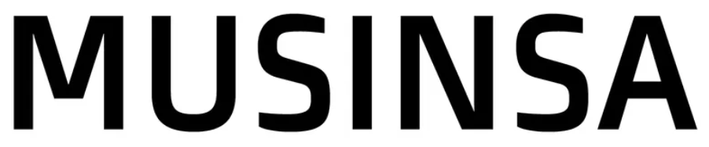
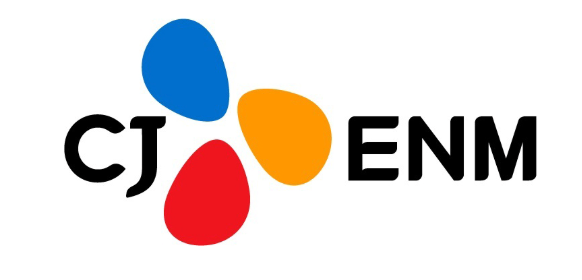
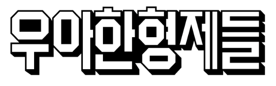
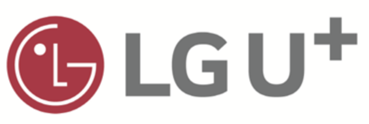
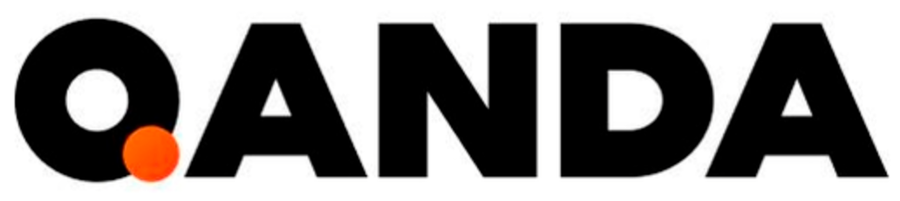
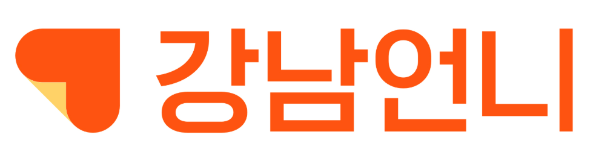
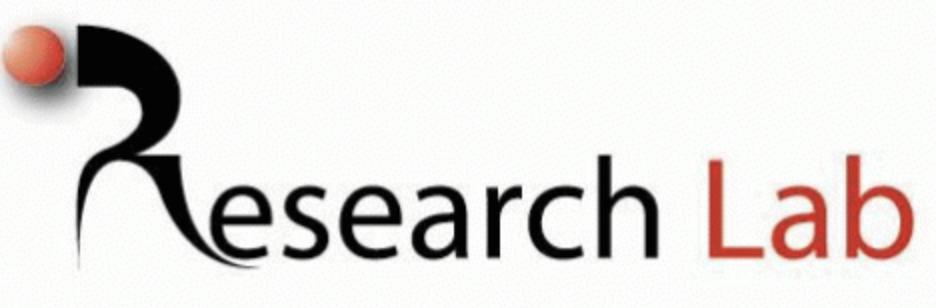

Proby is the most intelligent and human-like AI interview agent.
Try AI Interview
What We Do







Interviews Conducted
Case Studies
Avg. AI Similarity Score
Re-participation Rate
Our Mission
Our work process
Share Brief
Research goals, target audience, and key questions to be answered.
Set up Proby Agent
Configure interview script, persona, and conversation flow.
schedule ~1 dayRun Interviews
AI agent conducts 1-on-1 interviews at scale, in real-time.
Analysis & Report
Key insights extracted and a full report prepared for delivery.
schedule ~1 dayReceive Report
Actionable insights and recommendations, ready to act on.
Get Started
We welcome project inquiries and collaboration proposals. Experience deeper user insights with AI-powered interviews.